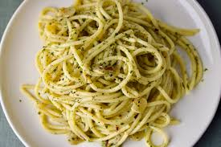

Spaghetti Aglio e Olio

Description
A classic Italian pasta dish made with spaghetti tossed in a
flavorful sauce of garlic-infused olive oil and red pepper flakes,
finished with a sprinkle of fresh parsley. Simple yet satisfying.
Ingredients
- 200g spaghetti.
- 4 cloves garlic, thinly sliced.
- 1/4 cup extra-virgin olive oil
- 1/2 teaspoon red pepper flakes (adjust to taste)
- Salt to taste
- Chopped parsley for garnish (optional)
Steps
- Cook spaghetti in boiling salted water according to package instructions until al dente. Reserve about 1/2 cup of pasta water before draining.
- In a large skillet, heat olive oil over medium heat. Add garlic slices and red pepper flakes. Cook until garlic turns golden brown, about 2-3 minutes, being careful not to burn.
- Add cooked spaghetti to the skillet along with a splash of reserved pasta water. Toss well to coat the spaghetti with the garlic-infused oil. Season with salt to taste.
- Serve hot, garnished with chopped parsley if desired.
go to back to home page